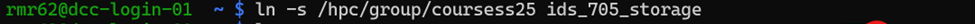
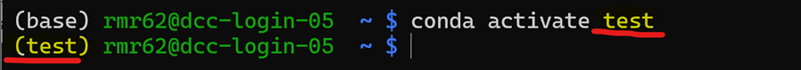
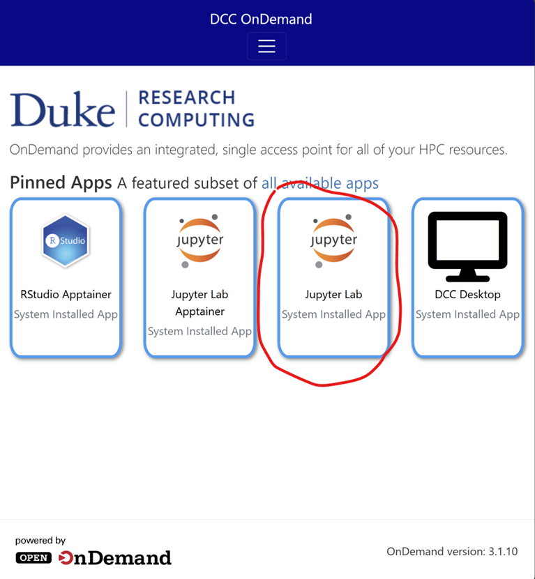
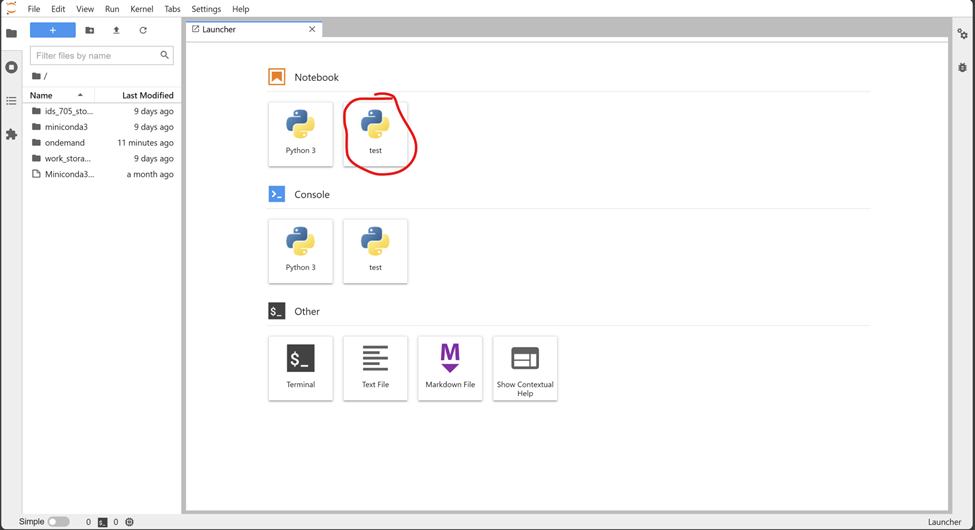
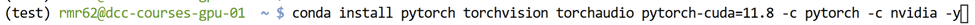
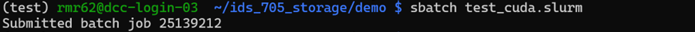
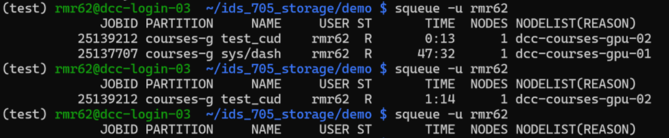
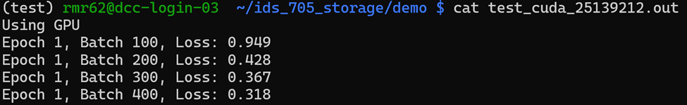
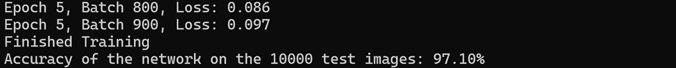

Duke Compute Cluster Guide
Python / Jupyter Notebook Guide for the Duke Compute Cluster (DCC)
This guide walks you through setting up and running Python and Jupyter Notebook on the DCC, managing environments, and submitting GPU jobs using Slurm (Simple Linux Utility for Resource Management).
1 One-Time Setup Steps (First Time Only!)
1.1 Familiarize yourself with the available file systems on the DCC.
- Overview: Duke Compute Cluster
1.2 SSH into the DCC.
Log into the cluster using your NetID.
Command:
ssh {your_netID}@dcc-login.oit.duke.edu(Example)

1.3 Create a symbolic link to the course25 directory.
The coursess25 directory has 1 Terabyte of shared storage space for the course. A symbolic link is a shortcut to another file system. When you first login, you will be in your home directory, create your shortcuts there.
Command:
ln -s /hpc/group/coursess25 ids_705_storage(Example)

1.4 Download and Install Miniconda.
Execute the following commands in your terminal and follow the instructions. Log out (close the terminal) and log back in upon successful installation, to being using Miniconda.
Commands:
wget https://repo.anaconda.com/miniconda/Miniconda3-latest-Linux-x86_64.sh
sh Miniconda3-latest-Linux-x86_64.sh2 Managing Python Environments
2.1 Create a new environment.
Command:
conda create -n {name_of_environment} python={Python.Version}(Example)

2.2 View available Conda environments.
Command:
conda env list(Example)

2.3 Activate the environment.
Command:
conda activate {name_of_environment}(Example)

2.4 Install Jupyter kernel and test installation.
Commands:
conda install ipykernel(Example)
python -m ipykernel install --user --name test(Example)

3 Accessing Jupyter Lab via DCC OnDemand Portal
3.1 Login at DCC OnDemand.
3.2 Click on Jupyter Lab.

3.3 Configure session resources:
Partition:
courses-gpu(for GPU) orcourses(no GPU).
GPUs:
1(if needed) or0.
CPUs: Up to
40.
Memory: Up to
208 GB.
Additional Slurm Parameters:
--gres=gpu:1

3.4 Launch the session and wait for the status to change to “Running”.
3.6 Start your notebook by selecting your preferred kernel.

4 GPU Demonstration on Jupyter Lab
4.1 Activate the previously created Conda environment.
In your terminal, activate the previously created “test” Conda environment. You can access a terminal in this session by clicking the blue plus button and selecting terminal in the now open launcher window (You can also use your ssh terminal).
Command:
conda activate test
4.2 Install required packages.
Commands:
conda install pytorch torchvision torchaudio pytorch-cuda=11.8 -c pytorch -c nvidia -y
conda install matplotlib

4.3 Open and run the notebook:
Location: ids_705_storage/demo/gpu_demo.ipynb.
- Important: Restart the kernel to ensure all installed packages are available.

- Expected Output: Ensure the first line of output says “Using GPU!!”.

.
.

5 GPU Demonstration Using Slurm Scheduler (Preferred method to run longer jobs)
Slurm (Simple Linux Utility for Resource Management) is a powerful workload manager and job scheduler designed for high-performance computing (HPC) clusters. It enables efficient resource allocation by managing compute nodes, CPUs, GPUs, memory, and job priorities across multiple users.
In this tutorial, we’ll focus on using Slurm to submit GPU jobs to Duke’s Compute Cluster (DCC). You’ll learn how to create and submit job scripts, specify resources like GPUs, CPUs, and memory.
5.2 Create your Python script (demo script: ids_705_storage/demo/data/test.py).

5.3 Create the Slurm file (demo file: ids_705_storage/demo/test_cuda.slurm).

5.4 Submit your Slurm job.
Command:
sbatch test_cuda.slurm
5.5 Monitor job status.
Command:
squeue -u {your_id}
5.6 Check job output (Wait for JobID to dissapear from above).
Command:
cat test_cuda_{your_job_id}.out- Expected Output:Ensure the first line of the output says “Using GPU”.

.
.

6 Final Notes
- Create a personal directory under:
/hpc/group/coursess25/ids705and name it after your NetID.
- Be mindful of shared resources and job submissions.
- Questions? Contact: rakeen.rouf@duke.edu.
- Visit Duke Compute Cluster for more information.
- If resources are busy, set GPUs to
0and ensure your code works on CPU (see demo code for an example).